에너지관리산업기사 (2004-03-07 기출문제)
1과목: 열역학 및 연소관리
1. 다음 중 폭발범위가 2.2 ∼ 9.5인 기체연료는?
- 수소
- 일산화탄소
- 프로판
- 아세틸렌
(정답률: 82%)

2. 다음 중 연소온도(t)를 구하는 식으로 옳은 것은? (단, Hℓ : 저발열량, Q : 보유열, G : 연소가스량, Cpm : 가스비열, η : 연소효율)
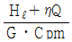
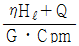
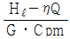
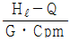
(정답률: 44%)
3. 공기분무식 버너에서 고압식과 저압식을 구분할 때 필요한 공기량은?
- 고압식 : 7~12%, 저압식 : 30~50%
- 고압식 : 15~25%, 저압식 : 50~70%
- 고압식 : 30~50%, 저압식 : 7~12%
- 고압식 : 50~70%, 저압식 : 15~25%
(정답률: 54%)
4. 다음 중 석탄의 풍화작용에 의한 효과로 맞지 않는 것은?
- 휘발분이 감소한다.
- 발열량이 감소한다.
- 탄 표면이 변색된다.
- 분탄으로 되기 어렵다.
(정답률: 71%)
5. 통풍력이 수주 25㎜일 때의 풍압은?
- 0.25㎏/cm2
- 0.025㎏/cm2
- 0.0025㎏/cm2
- 0.00025㎏/cm2
(정답률: 55%)
6. 메탄-공기 혼합기체의 연소에 있어서 메탄의 가연범위로 가장 적정한 체적농도 범위는?
- 5 ∼ 15%
- 2 ∼ 9%
- 4 ∼ 75%
- 2 ∼ 31%
(정답률: 67%)
7. 수소 1Nm3의 연소열은? (단, 2H2 + O2 = 2H2O(액체) + 136,600kcal)
- 3,049kcal
- 6,098kcal
- 34,150kcal
- 68,300kcal
(정답률: 34%)
8. 수소의 연소 반응식이 H2 + (1/2) O2 = H2O일 때 건연소가스량(Nm3/Nm3)은?
- 1.88
- 2.38
- 2.88
- 3.33
(정답률: 60%)
9. 1Nm3의 메탄가스(CH4)를 공기로 연소시킬 때 이론공기량은 얼마인가?
- 2.3Nm3/Nm3
- 7.35Nm3/Nm3
- 0.42Nm3/Nm3
- 9.52Nm3/Nm3
(정답률: 62%)
10. 다음 중 질소 산화물(NOX)의 발생 원인에 직접 관계되는 것은?
- 연료중의 질소분 연소
- 연소실의 연소온도가 높다.
- 연료의 불완전 연소
- 연료중의 회분이 많다.
(정답률: 42%)
11. 연료를 상태에 따라 분류한 것으로 옳은 것은?
- 무연탄, 중유, 경유 및 휘발유
- 도시가스, 석유 및 석탄
- 고체연료, 액체연료 및 기체연료
- 천연가스, 석유, 무연탄 및 유연탄
(정답률: 83%)
12. 다음 중 질소산화물에 대한 억제 대책으로 틀린 것은?
- 연소가스중 산소농도를 상승시킬 것
- 노내가스의 잔류시간을 감소시킬 것
- 과잉공기량을 감소시킬 것
- 노내압을 강하시킬 것
(정답률: 59%)
13. 연소가스 분석결과 CO2가 12.6%일 때 예상되는 O2농도는 몇 %인가? (단, 연료의 CO2 Max = 16.5%)
- 3.5%
- 6.0%
- 5.0%
- 7.0%
(정답률: 48%)
14. 다음 연료중 고위발열량이 가장 큰 것은?
- 중유
- 프로판가스
- 석탄
- 코크스
(정답률: 87%)
15. 다음 설명 중에서 틀린 것은?
- 탄화도가 적을수록 고정 탄소량이 증가하고 연소속도가 빨라진다.
- 탄화도가 클수록 연료비가 증가하고 발열량이 크다.
- 탄화도가 작을수록 연소 속도가 늦어진다.
- 탄화도가 클수록 휘발분이 감소하고 착화 온도가 높아진다.
(정답률: 55%)
16. CH4와 C3H8를 각각 용적으로 50%씩의 혼합기체연료 1 Nm3을 완전 연소시키는데 필요한 이론공기량(Nm3)은? (단, 반응식은 다음과 같다)
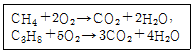
- 13.7
- 14.7
- 15.7
- 16.7
(정답률: 31%)
17. 물질을 연소시켜 생긴 화합물에 대한 설명으로 옳은 것은?
- 수소가 연소했을 때는 물로 된다.
- 황이 연소했을 때는 황화수소로 된다.
- 탄소가 불완전 연소할 때는 탄산가스로 된다.
- 탄소를 완전 연소시켰을 때는 일산화탄소가 된다.
(정답률: 84%)
18. 연도가스 분석에서 CO가 전연 검출되지 않았고, 산소와 질소가 각각 (O2)Nm3/kg연료, (N2)Nm3/kg 연료일 때 공기비(과잉공기율)는 어떻게 표시되는가?
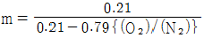
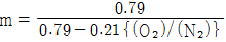
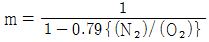
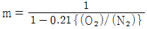
(정답률: 68%)
19. 고온건류에 얻어지는 코크스로 건류온도는?
- 1000∼1200℃
- 1500∼1700℃
- 2000∼2200℃
- 2500∼2700℃
(정답률: 57%)
20. 완전가스에 대한 설명으로 틀린 것은?
- 완전가스는 분자 상호간의 인력을 무시한다.
- 완전가스 법칙은 저온, 고압에서 성립한다.
- 완전가스는 분자 자신이 차지하는 부피를 무시한다.
- H2, CO2 등은 20℃, 1atm에서 완전가스로 보아도 큰 지장이 없다.
(정답률: 45%)
2과목: 계측 및 에너지진단
21. 랭킨사이클에서 단열팽창 과정이 발생되는 장치는?
- 펌프
- 복수기
- 터빈
- 보일러
(정답률: 52%)
22. 교축과정(throttling process)를 거친 기체는 다음 중 어느 양이 일정하게 유지되는가?
- 압력
- 엔탈피
- 비체적
- 엔트로피
(정답률: 73%)
23. 다음 중 카르노 사이클의 특색이 아닌 것은?
- 가역 사이클이다.
- 수열량과 방열량의 비가 수열시의 온도와 방열시의 온도의 비와 같다.
- P-V 선도에서는 직사각형의 사이클이 된다.
- 열효율이 고온열원 및 저온열원의 온도만으로 표시된다.
(정답률: 68%)
24. 어떤 시스템이 비가역과정에 의해 열역학적 상태가 변했을 때 이 시스템의 엔트로피 변화는?
- 변화가 없다.
- 항상 감소한다.
- 항상 증가한다.
- 시스템의 열역학적 상태에 따라 증가하기도 하고, 감소하기도 한다.
(정답률: 43%)
25. 1kg의 물이 0℃에서 100℃까지 가열될 때 엔트로피의 변화량은?
- 0.31 kcal/K
- 100 kcal/K
- 1 kcal/K
- 1.36 kcal/K
(정답률: 44%)
26. 일정한 압력하에서 25℃의 공기에 의해 100℃의 포화수증기 1kg이 100℃의 포화액으로 변화되었다면 이 과정에 대한 전체 엔트로피 변화는? (단, 100℃의 수증기에 대한 Hfg는 2257(KJ/kg)이고, 공기의 온도 변화는 없었다고 가정한다.)
- 6.048 (KJ/K)
- -6.048 (KJ/K)
- 1.522 (KJ/K)
- 7.570 (KJ/K)
(정답률: 44%)
27. 1atm, 15℃의 공기 3kg을 5atm까지 가역 폴리트로프과정으로 압축시킬 때 엔트로피의 변화는 몇 kcal/k 인가? (단, 공기에 대한 Cv = 0.17kcal/kg.℃, K = 1.4, n = 1.3 이다.)
- 0.0631 감소
- 0.0631 증가
- 0.1642 감소
- 0.1642 증가
(정답률: 39%)
28. 완전가스 5㎏이 350℃에서 150℃까지 PV1.3 = 상수에 따라 변화하였다. 엔트로피의 변화는 몇 ㎉/K가 되는가? (단, 이 가스의 정적비열은 0.156㎉/㎏℃이고, 단열지수 k는 1.4 이다.)
- 0.406
- 0.365
- 0.2⑤
- 0.101
(정답률: 41%)
29. 다음 중 실린더의 압축비에 대한 정의로서 옳은 것은?
- 격간체적/실린더체적
- 실린더체적/격간체적
- 격간체적/행정체적
- 행정체적/격간체적
(정답률: 69%)
30. 포화온도가 263℃인 건포화증기를 정압하에서 77℃ 만큼 과열시키고자 한다면 몇 ㎉/kg의 열을 가하여야 하는가? (단, 평균 정압비열은 0.8㎉/kg℃로 한다.)
- 58.7
- 61.6
- 68.6
- 72.4
(정답률: 33%)
31. 다음 중에서 정적과정, 정압과정 및 단열과정으로 구성된 사이클은?
- 카르노사이클
- 디젤사이클
- 브레이턴사이클
- 오토사이클
(정답률: 69%)
32. 압력 10bar, 온도 200℃의 공기(k=1.4)가 노즐에서 단열 팽창할 때 임계압력(bar)은 얼마인가?
- 5.28
- 8.99
- 27.95
- 17.06
(정답률: 20%)
33. 개방계의 에너지식으로 옳은 것은? (단, 는 유속, dW*는 개방계의 일, Z는 높이이다.)
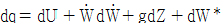
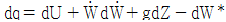
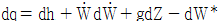
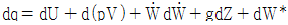
(정답률: 58%)
34. 온도 T1의 고열원으로 부터 온도 T2의 저열원으로 열량 Q가 전하여질 때 이 두 열원사이의 엔트로피 변화는?
- Q/T1 - Q/T2
- Q/T2 - Q/T1
- Q {(T1 + T2)/T1ㆍT2}
- {(T1 - T2)/Q.T1ㆍT2}
(정답률: 40%)
35. 노즐은 이론적으로 외부에 대해 열의 수수가 없고 또 외부에 대하여 일도 하지 않는다. 유입속도를 무시할 때 유출속도 V는 어떻게 표시되는가? (단, i는 엔탈피, gc는 중력단위환산계수, J는 열의 일당량을 나타낸다.)
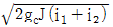
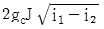
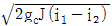
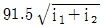
(정답률: 72%)
36. 공기 냉동 cycle은 어느 열기관의 역 cycle인가?
- otto
- Diesel
- Sabathe
- Brayton
(정답률: 76%)
37. 열역학 제2법칙에 대한 설명으로 적당한 것은?
- 성능계수가 무한대인 냉동기를 제작할 수 있다.
- 엔트로피의 절대치를 정의하는 법칙을 말한다.
- 온도계의 원리원칙을 제공하는 법칙을 말한다.
- 일을 소비하지 않고는 열을 저온체에서 고온체로 이동시키는 것은 불가능하다.
(정답률: 80%)
38. 폴리트로우프 과정중 압축기에서의 압축일에 대한 표현식으로 부적당한 것은?
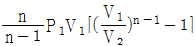
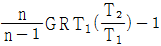
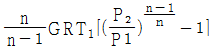
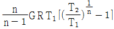
(정답률: 45%)
39. 다음 중 열의 일당량(kgㆍm/㎉)으로서 적당한 것은?
- 1/427
- 427
- 632
- 860
(정답률: 72%)
40. 열기관 중에서 가장 이상적인 cycle은?
- Rankine cycle
- Diesel cycle
- Carnot cycle
- Brayton cycle
(정답률: 77%)
3과목: 열설비구조 및 시공
41. 차압식 유량계로 유량을 측정시 차압이 2500mmH2O일 때 유량이 300m3/h 라면, 차압이 900mmH2O일 때의 유량은?
- 180m3/h
- 200m3/h
- 108m3/h
- 150m3/h
(정답률: 54%)
42. 오르쟈트 가스분석계의 배기가스 분석 순서로 맞는 것은?
- N2 → CO → O2 → CO2
- CO2 → CO → O2 → N2
- N2 → O2 → CO → CO2
- CO2 → O2 → CO → N2
(정답률: 63%)
43. 액주식 압력계에 사용하는 액체의 구비조건 중 틀린 것은?
- 액주의 높이를 정확히 읽을 수 있을 것
- 점도, 팽창계수가 클 것
- 항상 액면은 수평으로 만들 것
- 모세관 현상이 적을 것
(정답률: 84%)
44. 정도(情度)가 높은 유체의 유량 측정에 적합한 유량계는?
- 차압식 유량계
- 용적식 유량계
- 면적식 유량계
- 유속식 유량계
(정답률: 44%)
45. 고온체에서 방사되는 에너지 중 특정한 파장(0.65μm 인 적외선)의 방사에너지를 다른 온도의 고온 물체로 사용되는 전구의 필라멘트의 휘도와 비교하여 온도를 측정하는 온도계는?
- 방사온도계
- 서모컬러(Thermocolor)
- 제에겔콘
- 광고온계
(정답률: 57%)
46. 다음 중 주로 인화점이 80℃이하인 석유제품의 인화점 시험방법으로서 랙커솔벤트, 저인화점의 희석제, 연료 유류 등에서 적용하지 않는 시험법은?
- 타그 개방방식
- 타그 밀폐식
- 클리블렌드 개방식
- 펜스키 마르텐스 밀폐식
(정답률: 60%)
47. 링벨런스식 압력계에 대한 설명으로 올바른 것은?
- 압력원에 가깝도록 계기를 설치한다.
- 부식성 가스나 습기가 많은 곳에는 다른 압력계보다 정도가 높다.
- 도입관은 될 수 있는 한 가늘고 긴 것이 좋다.
- 측정 대상유체는 주로 액체이다.
(정답률: 76%)
48. 그림의 관로에서 온도계의 설치위치로 가장 적당한 곳은? (단, 관로는 연도가스 덕트(Duct)로 간주한다.)
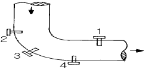
- 1
- 2
- 3
- 4
(정답률: 64%)
49. 다음은 가스분석계인 열전도율형 CO2 분석계의 사용상 주의사항을 설명한 것이다. 틀린 것은?
- 브리지의 공급전류 점검을 확실하게 한다.
- 셀의 주위온도나 측정가스온도를 거의 일정하게 보존 하고 유지하며 과도한 상승을 피한다.
- H2의 혼입은 지시를 높인다.
- 가스압력의 변동은 지시에 영향을 줄 수 있다.
(정답률: 78%)
50. 국제 미터원기(백금.이리듐 합금)로 표시된 1미터의 길이는 온도 몇 도에서 나타내는 값인가?
- 0℃
- 15℃
- 20℃
- 25℃
(정답률: 48%)
51. 다음의 제어동작중 잔류편차 존재로 인해 단독으로 쓰이지 않고 반드시 다른 동작과 함께 사용되는 동작은?
- 비례동작
- 적분동작
- 미분동작
- 2위치동작
(정답률: 64%)
52. 다음 중 특정 가스의 물성정수인 확산속도를 이용하여 분석하는 것은?
- 자동 화학식 CO2법
- 가스크로마토 그래프법
- 오르자트법
- 연소열식 O2법
(정답률: 65%)
53. 다음 중 접촉식 온도계가 아닌 것은?
- 바이메탈 온도계
- 백금저항 온도계
- 열전(대) 온도계
- 광고온계
(정답률: 77%)
54. 1차 제어장치가 제어량을 측정하여 제어명령을 발하고, 2차 제어장치가 이 명령을 바탕으로 제어량을 조절하는 측정제어와 가장 가까운 것은?
- 비율제어(Ratio-control)
- 프로그램 제어(Program-control)
- 정치제어(Constant value control)
- 케스케이드 제어(Cascade-control)
(정답률: 83%)
55. 계측기기의 구비조건으로 잘못된 것은?
- 연속 측정이 되어야 한다.
- 정도가 높고 구조가 간단하여야 한다.
- 견고하고 신뢰성이 낮아야 한다.
- 설치장소 및 주위 조건에 내구성이 있어야 한다.
(정답률: 88%)
56. 다음 중 압력손실이 가장 적은 유량측정 방식은?
- 오리피스
- 플로-노즐
- 벤츄리
- 오발기어형 유량계
(정답률: 59%)
57. 프로세스 제어의 난이 정도를 표시하는 낭비시간(dead time) L과 시정수 T와의 비 L/T는?
- 작을수록 제어 용이
- 클수록 제어 용이
- 조작정도에 따라 다르다.
- 비에 관계없이 일정하다.
(정답률: 73%)
58. 프로세스(process)계내에 시간지연이 크거나 외란이 심할 경우 조절계를 이용하여 설정점을 작동시키게 하는 제어 방식은?
- 프로그램 제어
- 캐스케이드 제어
- 피드 백 제어
- 시이퀀스 제어
(정답률: 82%)
59. 그림은 증기압력 제어의 병렬제어 방식의 구성을 표시한 것이다. ( )에 적당한 용어는?
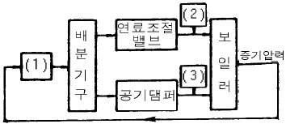
- 1 : 동작신호, 2 : 목표치, 3 : 제어량
- 1 : 조작량, 2 : 설정신호, 3 : 공기량
- 1 : 압력조절기, 2 : 연료공급량, 3 : 공기량
- 1 : 연료공급량, 2 : 공기량, 3 : 압력조절기
(정답률: 83%)
60. 다음 중 차압식 유량계로만 짝지어진 것은?
- 오리피스, 벤츄리, 플로-노즐
- 로터리커, 피스톤형유량계, 칼만식유량계
- 칼만식유량계, 델타유량계, 스와르미터
- 전자유량계, 토마스미터, 오벌유량계
(정답률: 80%)
4과목: 열설비취급 및 안전관리
61. 백금.로듐(PR) 표준 열전대의 최고 사용온도는?
- 800℃
- 1200℃
- 1600℃
- 2000℃
(정답률: 59%)
62. 관선의 지름을 바꿀 때 사용되는 관 부속품은?
- 발브(valve)
- 엘보(elbow)
- 리듀서(reducer)
- 플러그(plug)
(정답률: 87%)
63. 길이 방향으로 배치된 관 구멍부의 효율은 피치가 같을 경우, 어떤 식으로 나타낼 수 있는가? (단, P : 관구멍의 피치[mm], d : 관구멍의 지름[mm], η : 효율)
- η = (d - P)/P
- η = P/(d - P)
- η = (P - d)/P
- η = P/(P - d)
(정답률: 71%)
64. 다음 중 요로의 배가스열을 회수, 이용하는데 관계없는 것은?
- 온수발생기
- 폐열 보일러
- 축열기(Regenarator)
- 디어레이터(脫氣器)
(정답률: 62%)
65. 판상보온재를 사용하는 경우 소정의 두께의 보온판을 철사로 묶어서 밀착시킨다. 보온재의 두께가 다음 중 어느 정도가 넘을 경우 가능한 한 2층으로 나누어 시공하는가?
- 25mm
- 50mm
- 75mm
- 10mm
(정답률: 61%)
66. 어느 보온벽의 온도가 안쪽 20℃, 바깥쪽 0[℃]이다. 벽 두께가 20[cm], 벽 재료의 열전도율이 0.2[kcal/m h℃]일 때 벽 1[m2]당, 매시간의 열손실량[kcal]은?
- 0.2
- 0.4
- 20
- 50
(정답률: 59%)
67. 다음 중 보일러 급수를 처리할 때 pH 조정제로 사용하지 않는 것은?
- 수산화나트륨
- 암모니아
- 탄산나트륨
- 제3인산나트륨
(정답률: 37%)
68. 용광로의 용량표시는 무엇을 기준으로 하여 나타내는가?
- 광석, 톤/회
- 광석, 톤/일
- 선철, 톤/회
- 선철, 톤/일
(정답률: 64%)
69. 보온재가 가져야할 특성과 관계가 없는 것은?
- 흡수성 및 흡습성
- 기공의 크기
- 재질의 유동성
- 재질의 조밀도
(정답률: 56%)
70. 다음 중 급수 중의 불순물이 직접 보일러의 과열의 원인으로 되는 것은?
- 탄산가스
- 수산화나트륨
- 히드라진
- 유지
(정답률: 79%)
71. 다음 중에서 반연속식 가마는?
- 회전가마
- 선가마
- 오름가마
- 고리가마
(정답률: 48%)
72. 유량을 Q[m3/sec], 유체의 평균유속을 V[m/sec]라 할 때 파이프 내경 D[mm]를 구하는 식은?
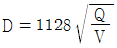
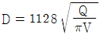
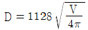
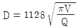
(정답률: 47%)
73. 다음 중 노통연관식 보일러의 급수를 처리할 때 탈산소제로 사용하지 않는 것은?
- 타닌
- 수산화나트륨
- 하이드라진
- 아황산나트륨
(정답률: 38%)
74. 다음 중에서 가마내의 온도분포가 가장 고른 것은?
- 승염식 가마(윗불꽃 가마)
- 도염식 가마(꺽임불꽃 가마)
- 횡염식 가마(옆불꽃 가마)
- 오름 가마(통굴 가마)
(정답률: 68%)
75. 가마에서 가스 유량을 측정하는 기기가 아닌 것은?
- 오리피스 미터(Orifice meter)
- 오르자트(Orsat) 분석기
- 피토관(Pitot tube)
- 벤츄리 미터(Venturi meter)
(정답률: 59%)
76. 보일러 동체의 최소 두께는 안지름이 1850mm 초과하는 것은 얼마 이상으로 하여야 하는가?
- 8mm
- 10mm
- 12mm
- 15mm
(정답률: 70%)
77. 도시가스 연소식 노통연관보일러에 설치하는 증기압력계의 적정한 눈금은 어느 범위에 있어야 하는가?
- 최고 사용압력의 2∼3배
- 최고 사용압력의 1.5∼3배
- 사용압력의 2∼3배
- 사용압력의 1.5∼3배
(정답률: 79%)
78. 증기관으로 부터 손실되는 열량이 600Kcal/h에서 관 주위를 보온한 후의 열 손실은 100Kcal/h이었다. 보온재의 보온 효율은?
- 80.3 %
- 89.3 %
- 86.3 %
- 83.3 %
(정답률: 50%)
79. 보온재의 열전도율을 가장 크게 지배하는 것은?
- 보온재를 구성하는 고체물질의 열전도율
- 보온재에 포함된 공기포나 그 층의 크기와 분포
- 안전사용온도 범위에서 보온재의 온도
- 보온재의 두께
(정답률: 46%)
80. 내화 몰타르 사용 목적과 거리가 먼 것은?
- 내화벽돌의 결합
- 침식 부분의 보호
- 냉공기 유입 방지
- 내화도 향상
(정답률: 42%)